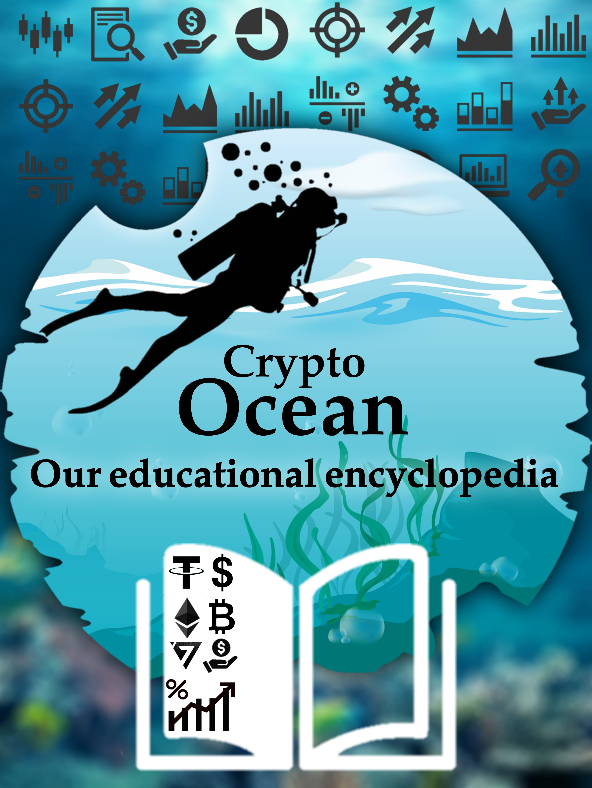

قبل الدخول في مجال العملات الرقمية يجب عليك أولا تكوين صورة عامة واضحة وشاملة عن أساسيات ومبادئ العملات الرقمية ومبدئيا أهم شيئ يجب ان تعرفه هو ماهي العملات الرقمية والبلوكتشين وماهي هي اول عملة رقمية تم انشاءها والقصة الكاملة
محفظة Trust Wallet من اكثر المحافظ امانا نظرا لانها تابعة لمنصة باينانس , و لانها محفظة لامركزية محفظة Trust Wallet هي تطبيق محفظة محمولة تسمح بإرسال وتلقي وتخزين الرموز المميّزة للعملات المشفرة على بلوكشين الايثيريوم، تهدف هذه المحفظة مفتوحة المصدر المصممة مع التركيز على البساطة، إلى توفير نظام أساسي سهل الإعداد ومباشر. محفظة Trust Wallet من اكثر المحافظ امانا نظرا لانها تابعة لمنصة باينانس , و لانها محفظة لامركزية و هي من اكبر منافسين محفظة Myetherwallet. الصفحة الرئيسيةمحافظ شرح محفظة Trust Wallet 2021 محفظة Trust Wallet من اكثر المحافظ امانا نظرا لانها تابعة لمنصة باينانس , و لانها محفظة لامركزية محافظ محفظة Trust Wallet هي تطبيق محفظة محمولة تسمح بإرسال وتلقي وتخزين الرموز المميّزة للعملات المشفرة على بلوكشين الايثيريوم، تهدف هذه المحفظة مفتوحة المصدر المصممة مع التركيز على البساطة، إلى توفير نظام أساسي سهل الإعداد ومباشر. محفظة Trust Wallet من اكثر المحافظ امانا نظرا لانها تابعة لمنصة باينانس , و لانها محفظة لامركزية و هي من اكبر منافسين محفظة Myetherwallet. ميزات محفظة Trust Wallet: محفظة Trust Wallet امنة جدا نظرا لانها تابعة لمنصة باينانس و لانها لامركزية و متاحة للجميع تتيح لك تطبيقاً محمولاً بسيطاً ، تستطيع من خلاله إدارة عملاتك الرقمية والـ tokens الخاصة بك ، ويسمح لك بالتحكم الكامل في مفاتيحك الخاصة private keys في نفس الوقت . تحتوي على متصفح داخلي مدمج ، يسمح لك بإستكشاف الـ DApps (التطبيق اللامركزي(DAPP) هو تطبيق مفتوح المصدر ، يعمل بشكل مستقل ، ويتم تخزين بياناته على بلوكتشين) في سلاسة وأمان . تقوم بتخزين الغالبية العظمى من العملات الرقمية ، بالإضافة إلى الـتوكنز المبنية على تقنيات ERC20, ERC223, ERC721, BEP2 الموجودة في السوق العملات التي يمكن تخزينها على محفظة Trust Wallet: تدعم Trust Wallet جميع الرموز المميزة لـ Ethereum ERC20 و ERC223. هذا يعني أنه يمكنك تخزين مجموعة واسعة من العملات باستخدام تطبيق الهاتف المحمول، مثل: (ETH) (ETC) (OMG) (QTUM) (PPT) (SNT) (MKR) (REP) (VEN) (ICX) (WTC) (AE) (BTM) (ZRX) (RHOC) (GNT) (XIN) (NAS) (AION) (IOST) (DGD) (LRC) (ZIL) كيفية انشاء محفظة Trust Wallet: 1.تحميل تطبيق المحفظة على جهازك المحمول من هنا 2.اضغط على create new wallet إنشاء محفظة جديدة 3.اضغط على المربع و اضغط على Continue (ادرك انه اذا فقدت ....الخ) 4.ستظهر لك الكلمات المفتاحية على الشاشة تقوم بالضغط على نسخ ثم استمر يقول لك التطبيق بان تحتفظ الكلمات و عدم مشاركتها مع احد ابدا وانها سوف تكون الطريقة الوحيدة للدخول للمحفظة) . 5.احفظ ال 12 كلمة في اكثر من مكان و لا تشاركها مع احد ابدا و اضغط على Continue اعد ترتيب ال 12 كلمة و اضغط على Continue ملاحظات: يمكنك انشاء اكثر من محفظة Trust Wallet باستخدام التطبيق. اذا كنت قد امتلكت هذه المحفظة من قبل و قمت بحذفها يمكنك استعادتها مرة اخرى عن طريق ال 12 كلمة و لكن في حالانك اضعت ال 12 كلمة لن يكون هناك اي طريقة لاعادة الدخول للمحفظة. لارسال او استقبال العملات يحب عليك الضغط على العملة المراد ارسالها او استقبالها و الضغط على send لارسال العملة او receive للحصول على عنوان محفظتك. قدمنا لكم شرح متكامل عن محفظة Trust Wallet العملاقة وعن انشاء محفظة بكل سهولة وفي حالة وجود اي استفسار يرجى مراستنا في مجموعة التلغرام الخاصة بموقعنا طريقة إنشاء محفظة Safepal : 1. قم بفتح تطبيق Safepal، واختر Software wallet، ثم Create wallet. 2. ادخل كلمة السر، ثم اسم للمحفظة من اختيارك ثم عدد كلمات الآمان التي تريدها 12 أو 24 3. اضغط Done ثم Back up my phrase ومن ثم حدد الخيارات الثلاثه التي تظهر امامك ثم اضغط I understand ستظهر كلمات الامان (لا يمكن اخذ لقطة شاشة ستحتاج لكتابتها على ورقة اولاً وبالترتيب) ومن ثم سيطلب منك ان تعيد ترتيبها للتأكد من انك احتفظت بها لانها الطريقة الوحيدة للدخول واستعادة المحفظة.
ما هي العملات الرقمية العملة الرقمية المشفرة أو Crypto-Currenciesهي عبارة عن أكواد برمجية غير ملموسة وليس لها أي وجود فيزيائي في الواقع, فهي توجد على شبكة الانترنت فقط و يتم تبادلها و استخدامها الكترونيا, تحمل هذه العملات الرقمية قيمة مادية تماما كما العملات الورقية العادية, الا انها تكتسب قيمتها من تداولات الناس بها وليس من جهة معينة كالبنوك المركزية, عند الحديث عن العملات الرقمية يجب الحديث عن البيتكوين Bitcoin(BTC) و هو أول العملات الرقمية المشفرة في العالم. فما هو البيتكوين و ماهو تاريخه؟ ظهر البتكوين Bitcoin (اولى العملات الرقمية) عام 2009 , أما اليوم فهنالك المئات من العملات الرقمية المعروفة ذات الاسعار المتفاوتة، كانت قيمة البيتكوين في بداياته لا تذكر حيث كنت تستطيع شراء مئات القطع بدولار واحد فقط! بينما يتداول البيتكوين اليوم بأسعار تقترب من 55 ألف دولار للعملة الواحدة! لقد كان هدف مخترع البتكوين (ساتوشي ناكاموتو – الذي لانعرف عنه سوى هذا الاسم فقط) هو تسهيل المعاملات المالية و تحريرها من سلطة الوسيط (البنوك و مكاتب التحويل و.. ) و جعلها سرية تماما, فالفرق بين ارسال المال عبر حوالة عادية و ارسال البيتكوين كبير جدا، الحوالة العادية قد تستغرق عدة ايام و ستتطلب منك عمولة كبيرة نسبيا و سيتم معرفة من قام بالتحويل و الى أين، باستخدام البيتكوين ستتمكن من ارسال اي مبلغ تريد خلال دقائق مع عمولة شبه معدومة، اما الميزة الأهم لن يعلم احد من قام بالتحويل و الى اين، لأن عملية التحويل ستتم من شخص لآخر مباشرة (نظير لنظير أو ند لـ ند) دون وجود وسيط ثالث بينهما. عدد البيتكوين في العالم محدد و معروف, حيث حدد ساتوشي عدده بـ21 مليون قطعة فقط, أنتج منها حتى اليوم ما يقارب 18 مليون قطعة فقط (يتم انتاج قطع البيتكوين الجديدة من خلال عمليات التعدين التي سنتحدث عنها لاحقا) أين يوجد البيتكوين ؟ لتتمكن من استقبال البيتكوين او اي عملة مشفرة أخرى عليك امتلاك محفظة خاصة ، هناك الكثير من المحافظ المتوفرة على متاجر التطبيقات و سنتحدث عن المحافظ بشكل موسع في المقالات القادمة. كل محفظة لديها عنوان خاص address لكل عملة فيها ، يتم استخدامه في ارسال و استقبال العملة ، العنوان عبارة عن عدد من الارقام و الأحرف المتتالية ، كمثال : bc1qeppjnjr2t2nzzya7wyk6yrmx7x2zwtmz7vq4c ، مع ملاحظة أن كل عملة لها عنوانها الخاص بها في المحفظة. أخيراً, الأمور التي تم ذكرها أعلاه هي أساسيات مهمة يجب عليك فهمها في البداية حتى تستطيع التقدم بشكل صحيح في عالم العملات المشفرة, قد يبدو ماقرأته صعبا و غير مفهوم, لذا لا تتردد بطرح أي سؤال يراودك أو مناقشة أي فكرة لم تفهمها في مجتمع Crypto Ocean على تيلغرام
كيف اربح من العملات الرقمية ؟ طرق جمع راس المال طرق الحصول على مردود مادي من مجال العملات الرقمية (مجال الكريبتو) متعددة, بما أنك تقرأ هذا الموضوع الآن فإنك بالتاكيد بحثت عن مصدر ربح من الانترنت، و لربما سمعت عن العديد من المواقع التي تعدك أنك فور تسجيلك فيها و القيام ببعض الأمور البسيطة، ستنهال عليك بالدولارات و تجعلك غنيا بطرفة عين… الأمر ليس بهذه البساطة مطلقا. لا أريد أن أحبط عزيمتك لكن مصطلح ” الربح من الانترنت ” ينطوي على العديد و العديد من الفروع و الأنواع و الطرق.. لكن المواقع التي تريد منك الاستثمار هنا و هناك او بوتات تيليغرام التي تطلب منك نشر روابطها في كل مكان ليست منها بالتأكيد بل ليست سوى مضيعة لوقتك و جهدك الثمينين الذين ستحتاجهما كثيرا في مشوارك. الأمر يحتاج إلى صبر و تعلم و مواظبة. بشكل عام هناك سبيلان لتحقيق مردود في عالم العملات الرقمية, الأول هو التداول و الثاني هو ملاحقة الفرص المجانية سنتحدث عن التداول بشكل مستفيض في المحاضرة التالية, ولكن لابد من ذكر أن العديد من المتداولين في سوق العملات الرقمية اليوم بدأوا طريقهم من الصفر, أي أنهم لم يقوموا بإيداع أي مبلغ مالي من مدخراتهم و التداول به, بل بنوا رأسمالهم من متابعة الفرص المجانية و بدأوا بتعلم التداول و أصبحوا متداولين يوميين في السوق, البعض الآخر بدأ بتعلم التداول من خلال ايداع مبلغ مالي صغير ثم تكبيره تدريجيا حتى أصبح متداولا محترفا. الفرص المجانية فلنتابع الحديث عن ( الفرص المجانية ), في البداية لابد انك سمعت عن مصطلح الإيردروب airdrop ، حسنا ، سنشرح هذا المصطلح بالتفصيل : عندما يكون هنالك مشروع جديد في مجال العملات الرقمية فإن هذا المشروع سيحتاج الى ترويج خدماته و البحث عن مستثمرين ، هنا تأتي مهمتك كمستفيد من الفرص المجانية ، فأنت ستقوم بالترويج لهذا المشروع عن طريق عدد من المهام البسيطة على منصات التواصل الاجتماعي كـتويتر و تيليغرام و غيرها.. ستطلب منك الايردروبات الانضمام الى مجموعات و قنوات مشاريعها على تيليغرام ، متابعة حسابها في تويتر و اعادة تغريد بعض تغريداتها على ملفك الشخصي ، متابعة حساب المشروع في بعض الأحيان على منصات ميديوم ، لينكد إن و ريددت الخ.. أو حتى ارسال رابطك الخاص بالايردروب (رابط إحالتك) الى اصدقائك و الحصول على المزيد من عملة المشروع. هذا هو الترويج ، ستحصل مقابل الترويج للمشروع على عدد محدد من التوكن الخاص بهذا المشروع ، ستستلمها في محفظتك في موعد محدد تحدده الشركة او المشروع الذي قام بالإيردروب ( حيث سيطلب منك ارسال عنوان محفظتك لاستلام التوكن ، غالبا ما يطلب عنوان ايثريوم erc-20 ) و ستتمكن من بيع هذه العملات حالما يتم إدراجها في منصات التداول. انتشر موضوع الايردروبات في الماضي بشكل رهيب تزامنا مع صعود العملات الصاروخي في اواخر عام 2017, أما اليوم فأغلب الايردروبات التي قد تصادفها قد تكون مخادعة هدفها جمع المتابعين على حساباتها فقط من أهم الفرص المجانية كذلك المسابقات التي تعتمد على الحظ، هناك اشخاص او شركات ( منصات تداول، مشاريع ) يقومون بعمل مسابقات لمتابعيهم على تويتر، سيطلبون منك بعض المهام كالاعجاب بالتغريدة و اعادة تغريدها و اضافة تعليقات تحتوي اشارة ( تاغ ) لعدد من اصدقاءك على تويتر، عند انتهاء المسابقة يتم اختيار عدد من المشاركين ( قرعة ) و التواصل معهم لتسليمهم مكافآتهم بالعملات الرقمية. كذلك بعض الأحداث و الفعاليات التي تقام في تيليغرام منها جلسات الـ AMA و الكويزات بعدها, الـAMA هو اختصار لعبارة ( Ask Me Anything اسألني أي شيء ) و هي فقرة يتم عقدها مع المسؤولين عن مشروع معين في مجتمع تيليغرام لتوجيه اسئلة عن المشروع و الاجابة عنها من قبل مدير المشروع بشكل مباشر, حيث يطرح المشاركون أسئلتهم في وقت سابق و يختار المسؤولون الأسئلة الأفضل ليتم الإجابة عنها و يربح أصحابها جوائز بالعملات الرقمية. المشاركة في هذه الأحداث و غيرها تتطلب منك خبرة ولو بسيطة في مجال الكريبتو لذلك عليك أن تقرأ و تتعلم باستمرار كل ما تصادفه عن المجال. لوازم الاستفادة من الفرص المجانية ( الايردروبات و المسابقات ) : 1. سيلزمك حسابك على تيليغرام، لا تنس اضافة اسم مستخدم username الى حسابك في تيليغرام فهو ضروري. 2. حساب تويتر لكي تستطيع المشاركة بالفرص التي تتطلب حساب نشط على تويتر ( بالنسبة للمستخدمين من سوريا فإنكم ستحتاجون الى رقم أجنبي خارجي لتفعيل تويتر لأن سوريا من البدان المحظورة من خدمات تويتر ). 3. محفظة عملات رقمية لكي تستلم عليها الجوائز. 4. و بالطبع حساب Google نشط على الهاتف حتى تتمكن من ملء بعض الاستمارات Fourms و استلام رسائل البريد في حال لزومها. 5. تكثر محاولات الاحتيال و السرقة في مجتمعات تيليغرام المتخصصة بالعملات الرقمية, مهم : قم بتفعيل ميزة منع الإضافة إلى المجموعات في تيليجرام لحماية نفسك من عمليات الاحتيال! سنقوم بنشر جميع الفرص المناسبة و المسابقات على قناتنا Crypto Ocean على تلغرام وايضا صفحتنا على تويتر